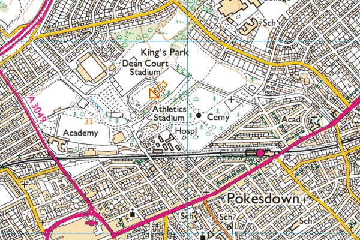

Hampshire Cross-Country League
King's Park, Bournemouth

Sat Nav destination
Postcode: BH7 7AF
OS Grid Reference: SZ117926
Directions
From North and East, approach Bournemouth via M3, M27 and A338. Pass start of 50 mph speed limit and sign indicating you are entering 'BOURNEMOUTH'. Continue straight on over fly-over (ignoring left hand signs to Wimborne, Littledown Centre and others). Take next exit, signposted 'Kings Park', 'Littledown' and 'Boscombe'. At small roundabout at end of slip road continue straight on, signposted 'Kings Park' and 'Vitality Stadium'. After 300 metres bear right which will take you to the large car park.
Important notice concerning parking at King's Park, Bournemouth
Please note that, although parking charges will apply, payment in the King's Park car park is possible only by phone or text. There are no cash machines and no means of paying with cash.
To save time and hassle on the day you are strongly advised to prepare for payment before you arrive. This can now be done using any of the following apps:
PayByPhone or by calling 01202 217070
RingGo or by calling 01202 232000 "No convenience fee is charged for using this service"
JustPark or by calling 01202 057207 "Free reminders and receipts"
There is further information displayed in the car park.
You can register over the phone at the car park when you arrive, but this will take some time and you will need to ensure you have your credit/debit card with you.
The location code for King's Park car park, for all three apps, is 59046.
The car parking charges are:
- £1.00 for up to 1 hour
- £1.50 for up to 2 hours
- £3.50 for up to 4 hours
- £5.00 for up to 24 hours (maximum stay)
- There may be an additional 10p charge for "optional texts".
Bournemouth Athletic Club apologise for the inconvenience this will cause, but it is beyond our control. It is, after all, progress!!
Train
Kings Park Athletic Stadium is about 15 minutes walk from Pokesdown station, which is on the main Waterloo - Bournemouth line. On leaving the station turn left, continue past the traffic lights and take the first left into Clarence Park Road. Continue forward until you enter Kings Park. Take the first footpath on the left, leaving the small car park to your right, and shortly you will have a large cemetery on your left. Continue with the cemetery on your left until you reach the stadium.
General Information
All races start and finish behind the athletic stadium and go anti-clockwise around King's Park. Course maps may be downloaded here.
There are limited shower and toilet facilities in the Kings Park Athletic Stadium - some additional portable toilets will be hired in.
A cafe serving light refreshments will be available in the stadium, where Race Headquarters will be situated.
Finally, enjoy your day in Kings Park, and have a successful run!
Ian Graham
Bournemouth AC